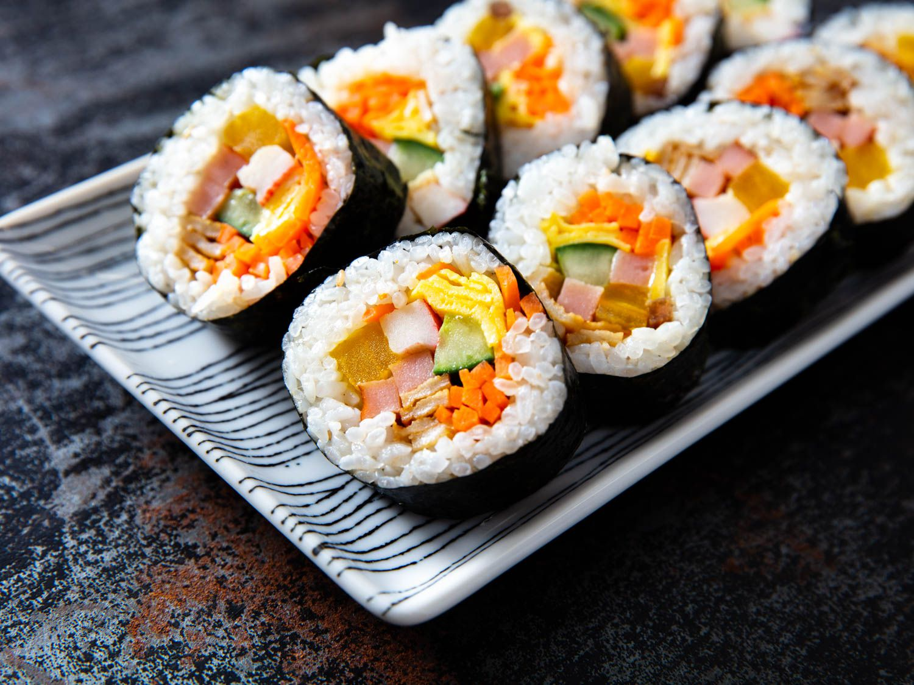
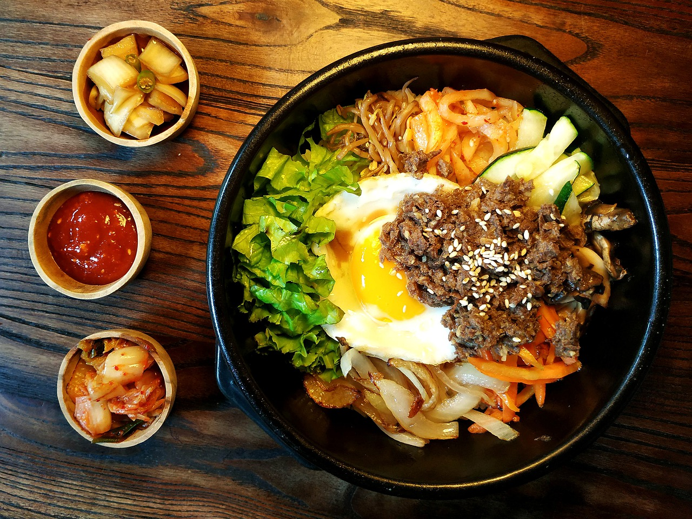
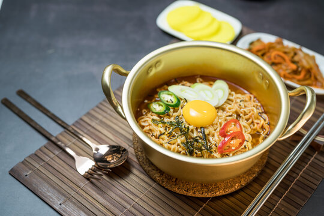

Korean barbecue (also abbreviated as Korean BBQ or KBBQ) refers to a method of cooking cuts of marinated meats. We marinate our meats in a variety of flavors, like soy sauce, toasted sesame oil, gochujang, and others before grilling it. At Ming's Diner we specifically use a charcoal grill built right into the table. In Korean cuisine, the experience of making barbecue right at your table can be just as important as the flavor of the dish itself. Korean side dishes, or banchan, that might accompany Korean barbecue include kimchi, veggies, rice, pajeori (a green onion salad), and others. You will find them in small bowls set in the center of the table. Our cooks serve banchan as a first course of sorts, then replenish the food throughout the meal so that our guests can enjoy it alongside the main course, which is the Korean-style barbecue itself.
Kimbap translates to seaweed (“kim”) rice (“bap”), and it is decidedly not “Korean sushi,” as some may describe it. Yes, it’s technically rice wrapped in seaweed with fillings, but the comparison stops there. Kimbap’s ingredients are distinct and particular to the dish: marinated vegetables, fried egg, ground meat and fish cake, to name a few. Our Chefs always think that the ingredients should represent the color spectrum – a feast for both the eyes and the taste buds.
"This dish takes its name from the Korean word for mixing rice but this variation uses gluten free millet and rice ramen instead. Sautéed zucchini, shiitake mushrooms, and shallots with savory ground beef and a yolky fried egg are served over rice ramen. Then mix it all together so the flavors and textures combine to create a gloriously tasty gluten free bibimbap ramen bowl! It's a simple and delicious meal that comes together in matter of few minutes..!!
Ramyeon is the Korean version of instant Japanese ramen. In Japan, ramen can be instant or fresh, but in Korea, ramyeon is always instant. A package of ramyeon comes with instructions on how to cook it, but our chefs have found a special way of doing it so much better, and they also use some simple fresh ingredients to make it more delicious.